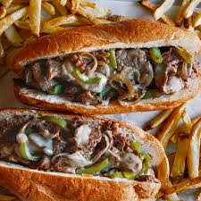

description
A cheesesteak (also known as a Philadelphia cheesesteak, Philly cheesesteak, cheesesteak sandwich, cheese steak, or steak and cheese) is a sandwich made from thinly sliced pieces of beefsteak and melted cheese in a long hoagie roll.
ingredients
- Provolone cheese
- Black Pepper
- Ribeye steak
- Hoagie rolls
- Olive oil
- Kosher salt
- Onion
- Butter
- Cheese
Steps
- Butter hoagie rolls, dice onion and thinly slice beef.
- Sautee onions and remove.
- Sautee beef until cooked through and add back onions.
- Divide into 4 portions, top each with 2 slices cheese.
- Cover with buns and scrape into buns with a spatula.